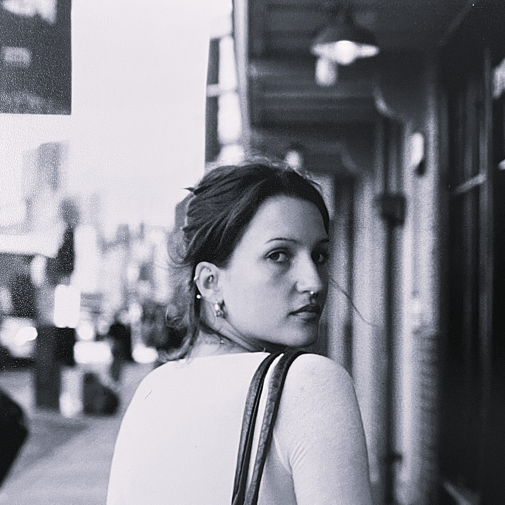

I am currently working as an Editorial Intern at St. Louis Magazine, where I cover the arts and culture beat. I'm a rising senior majoring in Journalism and Design, with a minor in Politics at The New School in Manhattan.
In 2025, I wrote for the features desk at The New School Free Press. I also have a strong background in fine art and fashion design. I attended Parsons School of Design for a year and a half, where I studied fashion design before transferring. During my time at Parsons, I took classes ranging from video production and graphic design to technical sewing and drawing.
Recently, I completed a semester studying abroad in London at King's College, where I studied Politics, Media, and Culture. I love writing all kinds of stories, but I have a particular soft spot for stories at the intersection of politics and culture. I believe in the innate power of storytelling and hold ethics and integrity at the center of my practice.
Recent Stories
Collected Stories
02 / SELECTED WORKA curated selection of work that highlights reporting, research, interviewing, and storytelling.
Expertise
- Editorial writing, news writing, feature writing
- Interviewing
- Fact-checking
- Research including FOIA and public databases
- Strong grasp of current events and politics
Tools & Software
- Adobe Creative Suite
- Datawrapper and Figma
- Microsoft Word
- Google Workspace
- Social media content creation
- Slack
- WordPress
Contact
New York, NY, 10009
+1 (314) 440-3239
Email — charlieblasingame9@gmail.com
LinkedIn — @charlie-blasingame
Substack — @charlieblasingame